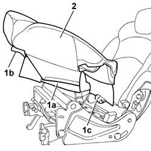

7050D29 LEFT OR RIGHT REAR SEAT CUSHION COVER (ONE) - R.R.
- Path
- Procedures > 70 FITTINGS > 7050 REAR SEATS > 7050D REAR SEAT TRIM/PADDING > 7050D29 LEFT OR RIGHT REAR SEAT CUSHION COVER (ONE) - R.R.
- Kind
- repair procedure (removal / refitting; the operation number is the code)
- Applies to
- all engines; all production periods
- Interactive page
- https://sloeber94.github.io/elrnDB-fUlss/en/#/179007913
Applies to: all engines; all production periods
 Removing
Removing
 Refitting
Refitting